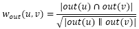

四、 给用户推荐好友
好友关系是社会化网站的重要组成部分，好友推荐系统的目的就是根据用户的好友、用户的行为记录给用户推荐新的好友，从而增加整个社交网络的稠密程度和社交网站用户的活跃度。
好友推荐算法在社交网络上被称为链接预测，代表文章是Jon Kleinberg的“Link Prediction in SocialNetwork”。
1. 基于内容的匹配
利用内容信息计算用户的相似度和利用内容信息计算物品的相似度类似，常用的内容属性有：
用户人口统计学属性；
用户的兴趣
用户的位置信息
2. 基于共同兴趣的好友推荐
第3章中讲过利用协同过滤算法（UserCF）来计算用户之间的兴趣相似度，在第4章中提到如何分析用户发言的内容、提取文本的关键词、计算文本的相似度等等。
3. 基于社交网络图的好友推荐
在社交网站中，我们会获得用户之间现有的社交网络图，然后基于它给用户推荐新的好友。
最简单的好友推荐算法就是给用户推荐好友的好友（人人网找老同学）。下面介绍三种基于社交网络的好友推荐算法。
对于用户u和用户v，我们可以用共同好友比例计算它们的相似度：

out(u)是在社交网络图中用户u指向的其他好友的集合，一般的无向社交网络图中，out(u)和in(u)是相同的集合，但在微博这种有向社交网络中，这两个集合就不同了，因此也可以通过in(u)定义另一种相似度：
用微博来解释这两个公式就是：wout(v,u)越大就表示用户u和用户v关注的用户集合重合度越大，win(v,u)越大就表示关注用户u和关注用户v的用户的集合重合度越大。
前两种相似度都是对称的，即wout(v,u)=wout(u,v)，win(u,v)=win(v,u)。同时，我们还能定义第三种有向的相似度：
这个相似度的含义是用户u关注的用户里面有多大比例关注了用户v。但有个缺点就是，该相似度的定义中所有人都和名人有很大的相似度，这是因为这个公式的分母中没有考虑到|in(v)|的大小。因此就有了如下改进：
上面这些公式都是基于一些简单的计算公式给出的，无论时间复杂度还是空间复杂度都不高，非常适合在线应用使用。
离线实验
这个实验在于评测哪种相似度能更好地预测用户之间的好友关系。
互联网上有很多社交网络数据集，比较著名的有斯坦福大学的大规模网络数据集http://snap.stanford.edu/data，该数据集包括很多链接结构数据集，包括社交网络数据集、互联网超级链接数据集、道路交通数据集、用户行为网络、论文应用网络等。这里我们使用该集合提供的Slashdot社交网络数据集，该数据集是一个有向图，包含82168个顶点、948464条边。
这里将数据集按照9:1分成训练集和测试集，然后给定用户u，利用训练集中的社交网络给用户生成长度为10的好友推荐列表R(u)，其中R(u)中的用户不包含用户u在训练集中的好友。下表展示了召回率和准确率：
可以看出，不同数据集上不同算法那的性能并不相同。在Slashdot上，win取得了最好的性能；在Epinion上，wout,in取得了最好的性能。
4. 基于用户调查的好友推荐算法对比
上面提到的三种不同的好友推荐算法，GroupLen的Jilin Chen进行了研究，他通过用户调查对比了不同算法的用户满意度。算法包括：
InterestBased：给用户推荐和他兴趣相似的其它用户。
SocialBased：基于社交网络给用户推荐他好友的好友作为好友。
Interest+Social：上述两种算法的按权重融合。
SONA：IBM内部的推荐算法。该算法利用了IBM员工信息建立的内部社交网络。
Jilin Chen在IBM数据的基础上用上述算法建立4中好友推荐系统，然后参试的用户提供12个推荐（每个算法3个），然后问卷调查，调查结果如下表：
从结果可以发现，对推荐结果的新颖性，不同算法排名如下：
InterestBased > Interest+Social > SocialBased >SONA（因为SONA是IBM内部的）
从用户认为推荐结果是否好的比例看，不同算法排名如下：
SONA > SocialBased > Interest+Social > InterestBased
五、 扩展阅读
1. 六度原理
2. 随机图论
3. 社交网络的两个著名问题
(1) 如何度量人的重要性，也就是顶点的中心度。
(2) 如何度量人与人之间的关系，也就是链接预测。